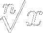

| FT | note | cents | Hz |
|---|---|---|---|
| Fundamental | |||
| Fundamental Tone | Harmonic Tones |
|---|---|
| MIDI-Input monitor | ||
| Channel | Note # | Velocity |
|---|---|---|
| MIDI Note 0-127
(midi#.cents) |
Frequency
(Hz) |
|
| Ratio Unit |  | Equal Divisions |
| x = | n = |
Transpose |
÷2 | Octave | ×2 |
| Harmonics | |||
| Subharmonics |
Transpose |
Octave
÷2 |
Ratio
×r |
Octave
×2 |
| Harmonics | |||
| Subharmonics |
| Last pressed keys | ||||
| # | Note | Hz | m.¢ | |
|---|---|---|---|---|
| HT | ||||
| FT | ||||